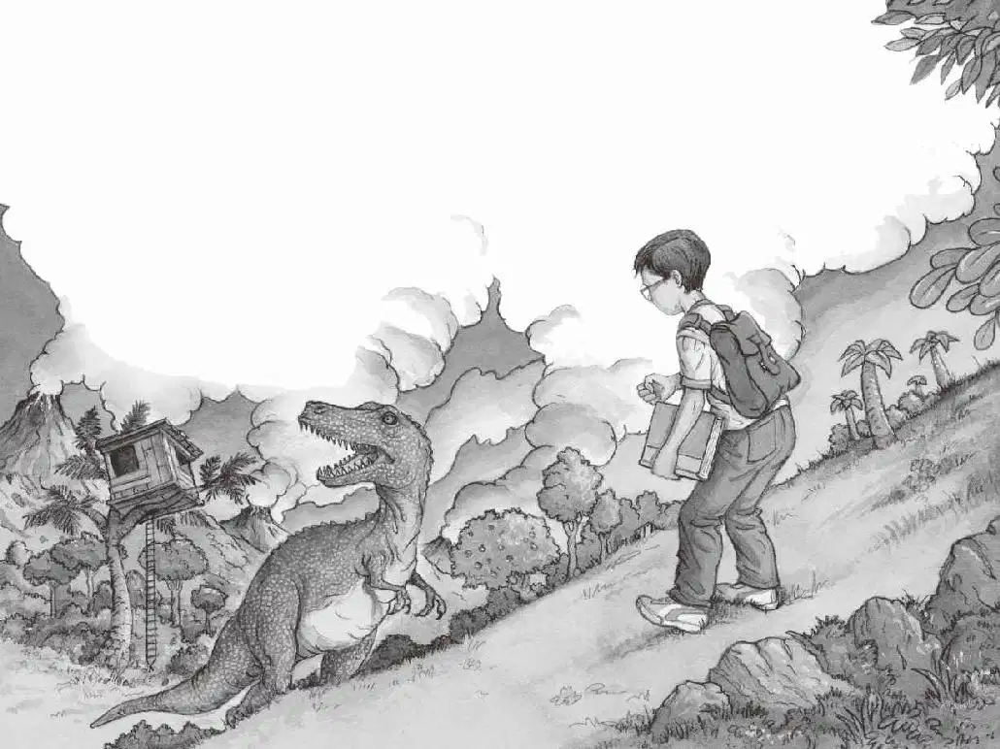

“跑，安妮！快跑！”杰克喊，“跑到树屋里去！”
杰克和安妮一起冲下山坡。他们跑过高高的野草地，跑过蕨草丛，跑过无齿翼龙身边。
他们急急忙忙地爬上绳梯，钻进了树屋。安妮立刻扑到窗口张望。“它走了！”安妮气喘吁吁地说。
杰克把眼镜往上推了推，和安妮一起看着窗外。
只见那只雷克斯霸王龙正在慢慢地往远处走。
突然，霸王龙停住脚步，转过身来。
“快低头！”杰克说。两人赶紧把脑袋低下。
过了很长时间，他们才敢抬起头朝窗外看。
“解除警报。”杰克说。
“太好了。”安妮松了一口气说。
“我们得赶紧离开这儿。”杰克说。
“你之前是不是许了一个愿望？”安妮问。
“没错。”杰克点点头说。
然后，他深深吸了口气说：“请带我们回家！”
什么也没发生。
“我说的是请带……”
“等等。”安妮提醒杰克，“你之前许愿的时候，正好看着恐龙书上的一幅图片，还记得吗？”
“对！糟糕！我把那本书和背包都落在山坡上了！”杰克说，“我还得回去一趟！”
“算了吧。”安妮说。
“不行，那本书不是我们的，我们得把它还回去。而且我的笔记本也在背包里，上面有我所有的笔记，还有我的……”
“好吧，好吧！那你快去吧。”安妮说。
“我马上就回来！”杰克快速地顺着绳梯爬下树，跳到了地面上。他飞快地跑过无齿翼龙身边，跑过蕨草丛，跑过高高的野草地，来到山坡上。他低头望去。还好，自己的背包还躺在地上，背包上放着那本恐龙书。
奇怪的是，此刻在山谷里到处都是鸭嘴龙，它们全都守护着自己的窝。杰克想：“刚才它们都到哪儿去了呢？现在跑回来，难道是因为害怕霸王龙？”
杰克深吸了一口气，默念道：“预备，开始，跑！”
他飞速冲下山坡，一口气跑到背包前，一把捞起背包背着，还抓住了那本恐龙书。
这时，他听到了那可怕的像大号一般的声音。一声！又一声！所有的鸭嘴龙都在朝他怒吼。
杰克拔腿就跑。他冲上了山顶。

然后，杰克开始往另一侧山下跑。
突然，他停住了。雷克斯霸王龙回来了！
它就站在杰克和树屋之间！